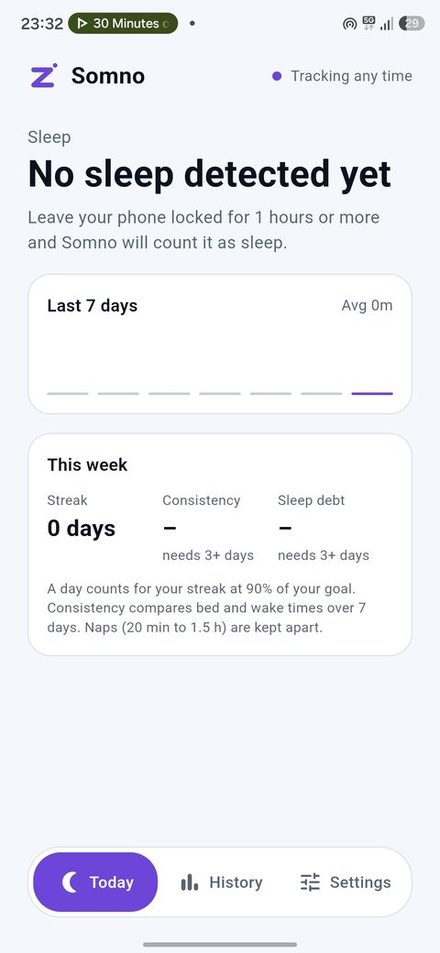
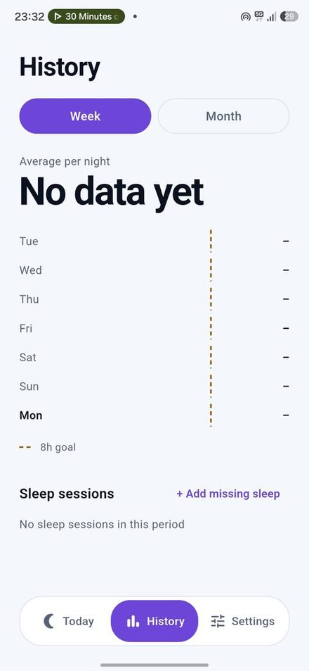
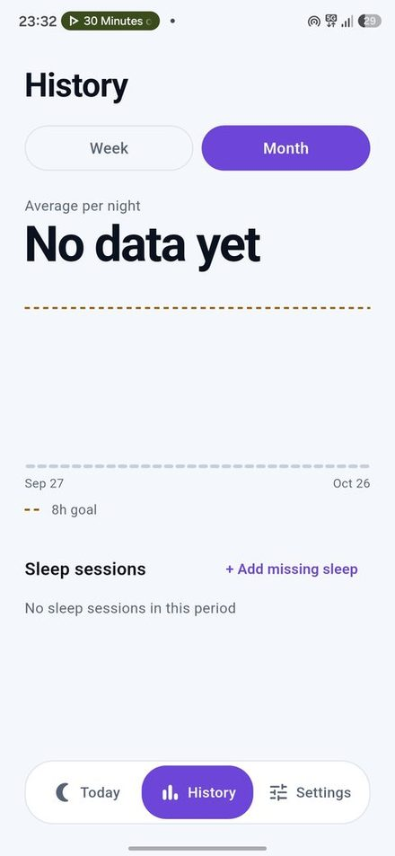
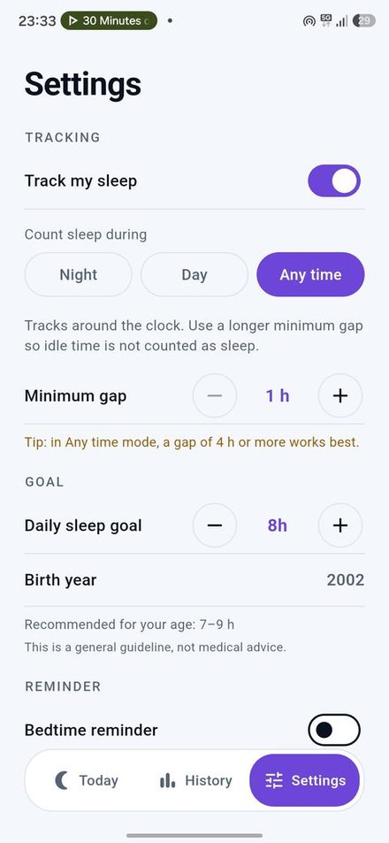
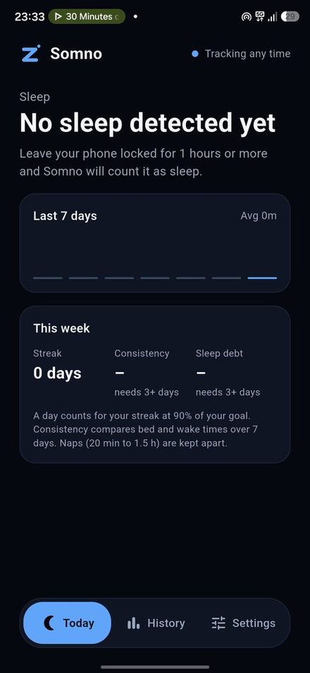
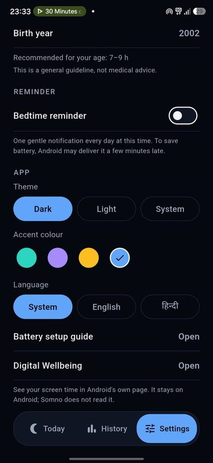

Somno
Sleep tracking that never leaves your phone. Leave your phone locked for a few hours and Somno counts it as sleep. No watch, no microphone, no account.
Android · English and Hindi · GitHub only

Screenshots





Why Somno
One simple idea
When you do not touch your phone for a long stretch, you are most likely asleep. That is enough for a clear picture of how much you sleep.
Nothing to wear
No watch, no microphone, no subscription. Somno only listens for screen-off and unlock events.
Private by design
Your sleep data stays in a database on your phone. No account, no sync, no analytics, no third-party SDKs.
Checkable
The detection logic is plain Dart and covered by unit tests. The whole code is open on GitHub.
Features
Tracking
- Automatic sleep detection from screen-off and unlock events only
- Three modes: Night, Day or Any time, each with its own start and stop time
- Minimum gap from 1 to 5 hours (3 hours by default)
- Runs quietly in the background and restarts after a reboot or an app update
Insights
- A daily sleep goal set from your age (National Sleep Foundation ranges)
- Streak: days in a row you reached at least 90% of your goal
- Consistency: how steady your bed and wake times were over 7 days
- Sleep debt: how far you are above or below your goal over 7 days
- Naps (20 minutes to 1.5 hours) are kept apart, so they never change your night averages
- Week and month history, with add, edit and delete for every session
Phone tab (new)
- Battery: level, charging state and source, temperature, health, voltage, and charge cycles on phones that report them
- This phone: model, Android version and security patch, processor, free memory and storage, screen size and refresh rate, and uptime
- A shortcut to Android's own battery usage page, because Android keeps per-app battery use to itself
- Read live while the tab is open. Nothing is saved, shared or uploaded
Comfort
- Optional bedtime reminder at a time you choose
- Dark, light and system themes, plus four accent colors: teal, purple, amber and blue
- English and Hindi, switchable inside the app
- A battery guide that helps Android keep the tracker alive, and a shortcut to Digital Wellbeing
- Tracking status screen and optional Usage access. With Usage access on, Somno runs no background service and shows no tracking notification: it reads your screen history from Android when you open the app. Open the app every few days, because Android keeps that history only for a short time
- In-app updates: check, download and install a new version without leaving the app
How it works
- A tiny Android service listens only for screen off and user unlock and writes their timestamps to the phone.
- When you unlock, the gap since the last screen-off becomes a sleep session if it is at least your minimum gap and at most 16 hours.
- In Night or Day mode, sleep must start inside your chosen window. Any time accepts every start time, so a longer minimum gap is advised.
- A session belongs to the day you woke up. You can add, edit or delete any session by hand.
Not medical advice. Somno estimates sleep from phone use, so it cannot tell light sleep from deep sleep and it does not diagnose anything.
Good to know
- Android may stop background apps to save battery. Use the in-app Battery setup guide and set Somno to Unrestricted or Don't optimise. Xiaomi, Oppo, Vivo, Huawei and Honor phones may need an extra autostart switch, or you can turn on Usage access in Settings › Tracking status. Somno then reads your screen history from Android itself.
- The bedtime reminder uses Android's normal alarm clock to save battery, so it can arrive a few minutes late.
- If you read your phone at night, that time is not counted as sleep. Edit or delete wrong sessions in History.
Private by design
All sleep data stays in a local database on your phone. No account, no ads, no analytics. Somno looks for a new version on GitHub at most once a day, which you can switch off in Settings, and downloads an update only when you choose. Nothing about you or your sleep is sent. Android auto-backup is switched off for the app. Read the full privacy policy.
Install
- Open the latest release on your phone.
- Download
Somno-vX.Y.Z.apkand open it. Android may ask once to allow installs from your browser. - Open Somno, enter your birth year, pick a tracking mode and follow the short battery step.
GitHub only, on purpose. Updates after that come from inside the app, in Settings › Check for updates.
App details
- Platform
- Android
- Current version
- 1.3.0
- Price
- Free, no ads, no in-app purchases
- Languages
- English and Hindi
- Internet
- Not needed. Only to look for and download new versions
- Source code
- github.com/lumio-apps/somno
- Privacy policy
- Read the privacy policy
- Report a problem
- GitHub Issues